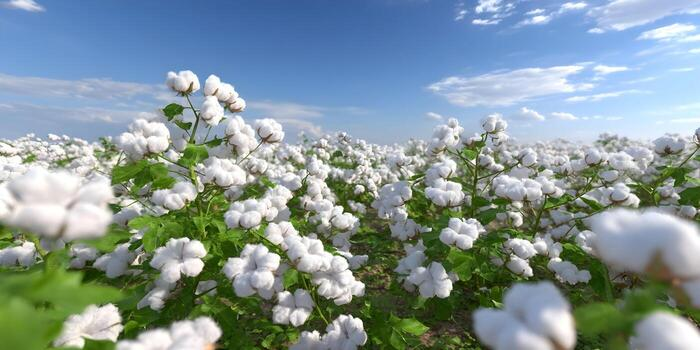
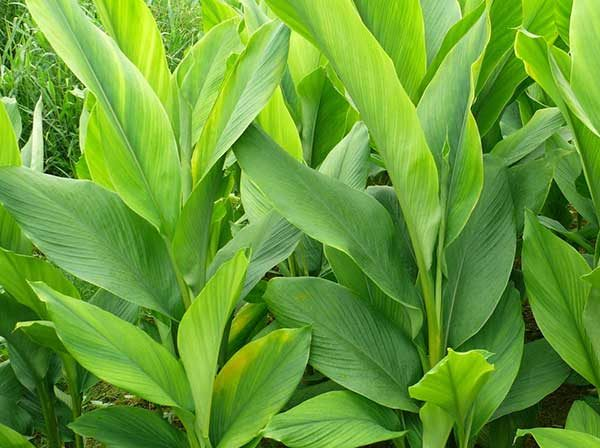
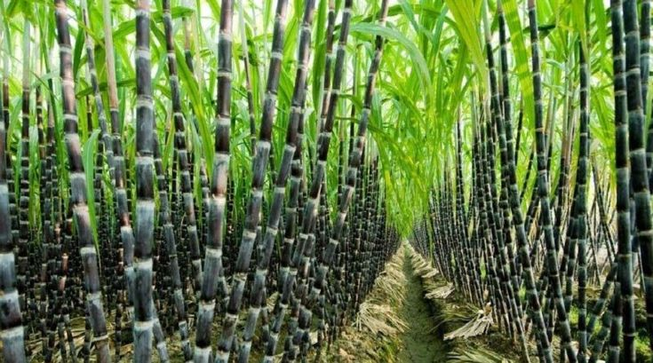

Soybean🌾
Complete care for quality soybean production.🌾

Pesticides 💊
Protect crops from pests and diseases safely 🌱

Cotton Cultivation 🌱
Smart practices for healthy cotton growth 🌱

Wheat Crop🌾
Essential farming practices to ensure healthy wheat growth and quality production 🌾

🌾Smart Krushi Kendra
Supporting Farmers, Growing Agriculture
Smart Krushi Kendra Portal is a user-friendly digital platform created to support farmers with essential agricultural information. The portal focuses on helping farmers improve crop production and farming practices through easy access to crop advisory, market price details, and farming medicine information. Farmers can learn about different crops such as soybean, cotton, wheat, rice, and maize, including their cultivation methods, soil requirements, and common diseases. The portal also provides information about fertilizers, pesticides, and other farming medicines with proper usage guidance to promote healthy crop growth. Market price updates help farmers understand crop value and make better selling decisions. Smart Krushi Kendra Portal aims to encourage smart and sustainable farming by connecting farmers with reliable and practical agricultural knowledge through a simple and accessible digital platform.
Our Crops

Soybean 🌱
A nutrient-rich crop known for its high protein content, essential for food, oil, and animal feed. Thrives in diverse climates with sustainable farming practices

Wheat 🌾
Wheat is an important cereal crop, widely used for food, flour, and other edible products. It grows well in diverse climates and adapts easily to sustainable farming practices.

Turmeric
Turmeric is a versatile and nutrient-rich crop, widely cultivated for its bright yellow rhizomes. It is valued for its culinary uses, medicinal properties, and natural coloring.

Sugarcane 🌱
Sugarcane is a tall, nutrient-rich crop widely grown for sugar production juice and bio-products It thrives in tropical and subtropical climates and can be cultivated using sustainable farming practices .